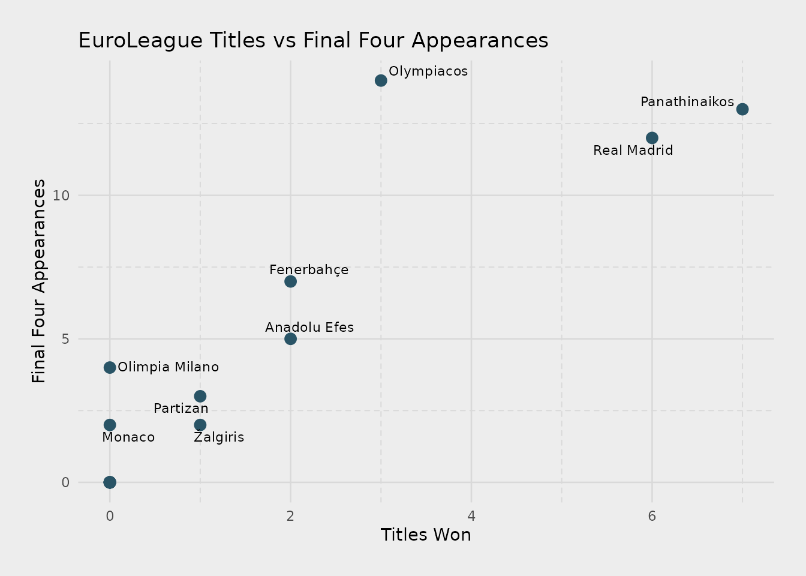

Example visualizations using the euroleague data
euroleague-visualizations.RmdIntro
This page demonstrates quick exploratory charts you can build with
the euroleague_basketball dataset.
Import libraries
library(EuroleagueBasketball)
library(ggplot2)
library(ggrepel)
library(data.table)
library(extrafont)
#> Registering fonts with RPeek at the data
head(EuroleagueBasketball::euroleague_basketball[, .(Team, Country, `Home city`, Arena, Capacity,
FinalFour_Appearances, Titles_Won)])
#> Key: <Team>
#> Team Country Home city
#> <char> <char> <char>
#> 1: Anadolu Efes Turkey Istanbul
#> 2: Barcelona <NA> Barcelona
#> 3: Baskonia Spain Vitoria-Gasteiz
#> 4: Bayern Munich Germany Munich
#> 5: Crvena zvezda Meridianbet Serbia Belgrade
#> 6: Dubai Basketball United Arab Emirates Dubai
#> Arena Capacity FinalFour_Appearances Titles_Won
#> <char> <char> <char> <char>
#> 1: Basketball Development Center 10,000 5 2
#> 2: Palau Blaugrana 7,585 0 0
#> 3: Buesa Arena 15,431 0 0
#> 4: SAP Garden 11,500 0 0
#> 5: Belgrade Arena 18,386 0 0
#> 6: Coca-Cola Arena 17,000 0 0Titles vs Final Four Appearances
# Convert to data.table
dt <- as.data.table(euroleague_basketball)
# Convert columns to numeric
dt[, Titles_Won_num := as.numeric(Titles_Won)]
dt[, FinalFour_num := as.numeric(FinalFour_Appearances)]
labels <- dt[FinalFour_Appearances > 0]
# Plot
ggplot(dt, aes(x = Titles_Won_num, y = FinalFour_num)) +
geom_point(color = "#295466", size = 3) +
geom_text_repel(
data = labels,
aes(label = Team),
size = 3
) +
labs(
title = "EuroLeague Titles vs Final Four Appearances",
x = "Titles Won",
y = "Final Four Appearances"
) +
theme_minimal(base_family = "Candara") +
theme(
panel.grid.major = element_line(linewidth = 0.45, color = "grey85", lineend = "round"),
panel.grid.minor = element_line(
linewidth = 0.35,
color = "grey85",
linetype = "dashed",
lineend = "round"
),
plot.margin = margin(20, 20, 20, 20),
plot.background = element_rect(fill = "grey93", color = NA)
)
Takeaway: Teams with many Final Four appearances aren’t always those with the most titles. For example, some teams are consistent contenders but rarely convert appearances into championships.